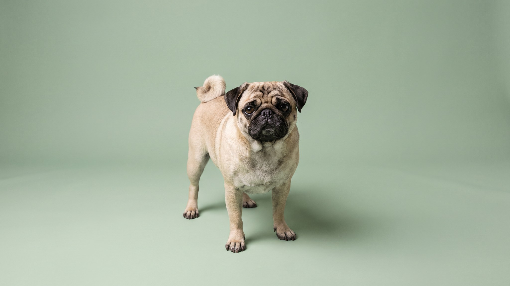

Пагл встречает каждого гостя так радостно, будто не видел его годами. Характер мопса — общительный и немного клоунский — сочетается с энергией бигля и его же неудержимым нюхом. На прогулке это означает: нос у земли, поводок натянут, а про команду «ко мне» пагл вспоминает только когда запах закончился. Что стоит знать до того, как взять щенка.
🐾 Ваш питомец — пагл?
Заведите профиль в AnimaLife: приложение запомнит породу, возраст и вес и будет подсказывать по уходу именно для неё. Вопросы AI-ветеринару — круглосуточно и бесплатно.
Завести профиль → Завести в MAX →
У вас iPhone? AnimaLife есть в App Store
Пагл — собака без агрессии. Он привязывается ко всей семье, дружелюбен с детьми и другими животными, легко сходится с незнакомцами. Это делает его плохим сторожем, но отличным компаньоном.
Упрямство достаётся от бигля. Если пагл учуял что-то интересное, команды перестают существовать. Это не игнор и не злой умысел — просто нюховый инстинкт перекрывает всё остальное. Начинать обучение лучше в возрасте 8–12 недель, пока переключаемость ещё высокая. Занятия короткими сессиями с едой работают лучше, чем долгие тренировки.
Пагл весит 7–14 кг и выглядит компактно, но нагрузка ему нужна настоящая. Две прогулки в день по 30–40 минут с возможностью нюхать и исследовать — минимум для спокойного поведения дома. «Нюховая прогулка», когда собака идёт не быстро, но нос в каждый куст — устаёт сильнее, чем просто пробежка рядом.
В жаркие дни прогулки переносят на утро до 9 и вечер после 19. Пагл с укороченной мордочкой хуже рассеивает тепло, чем породы с длинной. При температуре выше 25°C на асфальте прогулку укорачивают и следят за дыханием: если оно частое, хриплое или собака останавливается и не хочет идти — возвращаются домой.
Шерсть у пагла короткая, линяет умеренно. Расчёсывание раз в неделю жёсткой рукавицей убирает мёртвую шерсть. Мытьё раз в 3–4 недели.
Складки на мордочке требуют внимания каждые 1–2 дня. Между складками накапливается влага и остатки пищи, что приводит к раздражению. Протирать мягкой сухой тканью или ватным диском, потом просушивать. Если кожа покраснела или появился запах — это сигнал для ветеринара.
Порода работает хорошо у людей, которые готовы к ежедневным прогулкам, обучению с едой и уходу за складками. Семьи с детьми, активные одиночки, пожилые люди с умеренной активностью — все это рабочие варианты.
🐾 У вас пагл?
AnimaLife соберёт уход под породу: к каким болезням есть склонность, что проверять по возрасту, чем кормить и когда пора к врачу. Бесплатно, прямо в мессенджере.
Собрать план ухода → Собрать в MAX →
У вас iPhone? AnimaLife есть в App Store
🐾 Понравился разбор?
Подпишитесь на канал — каждый день разбираем по одному тревожному симптому у кошек и собак: что в пределах нормы, а когда пора к врачу. Подпишитесь, чтобы не пропустить разбор, который может спасти здоровье вашего питомца.
Материал носит информационный характер и не заменяет очную консультацию ветеринара.